Dígitos
Contorno de energia, espectograma, pitch, f0 e formantes para o áudio com dígitos.
- Pitch: 3,8ms;
- Fundamental Calculado (f0): 263Hz;
- Fundamental Visto (f0): 100Hz;
- Formante f1: ~250Hz;
- Formante f2: ~350Hz;
- Formante f3: ~500Hz;
- Formante f4: ~650Hz;
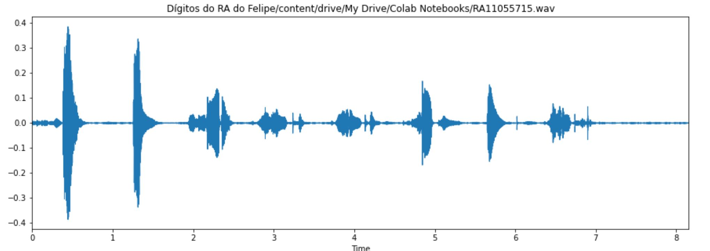 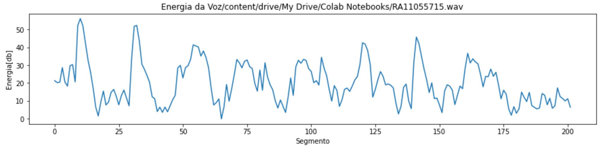 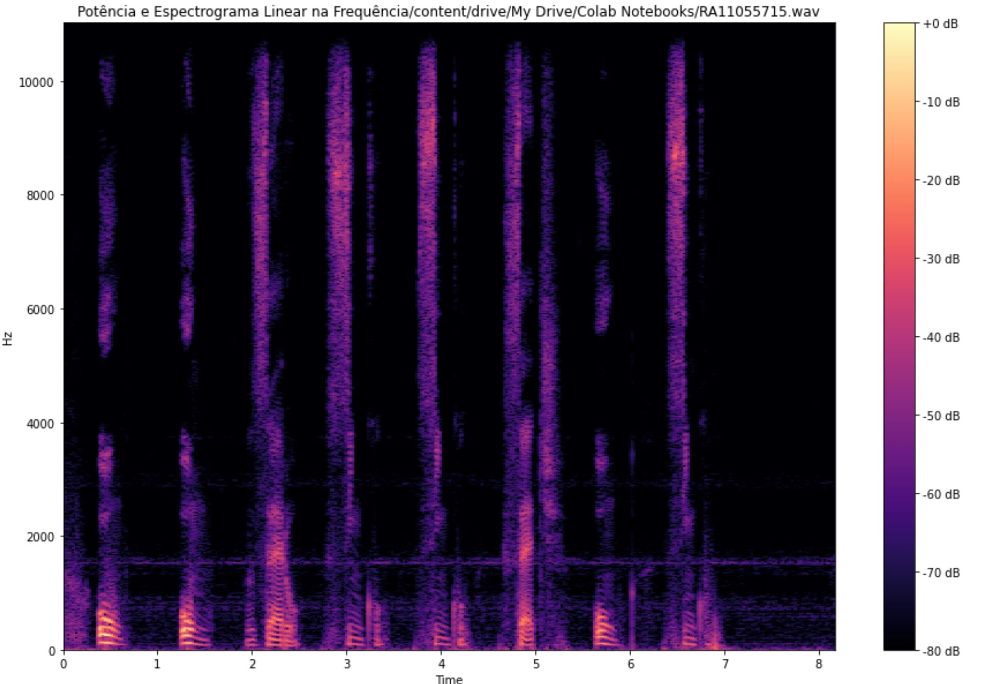 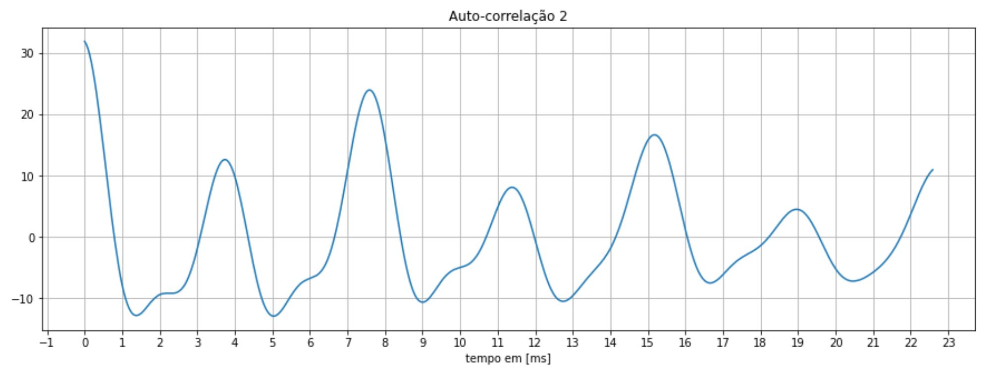 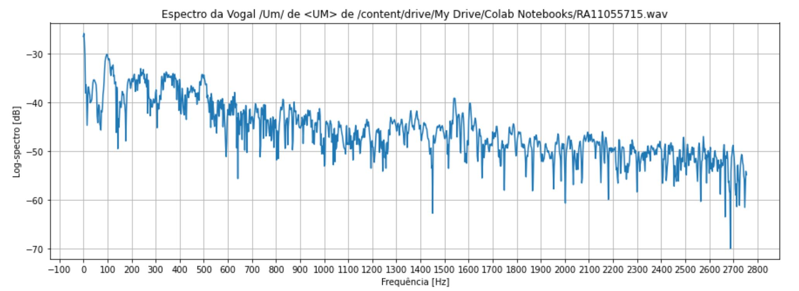
Voz falada
Poema
Contorno de energia, espectograma, pitch, f0 e formantes para o áudio com poema.
- Pitch: 4,7ms;
- Fundamental Calculado (f0): 208Hz;
- Fundamental Visualizado (f0): 110Hz;
- Formante f1: ~215Hz;
- Formante f2: ~310Hz;
- Formante f3: ~420Hz;
- Formante f4: ~530Hz;
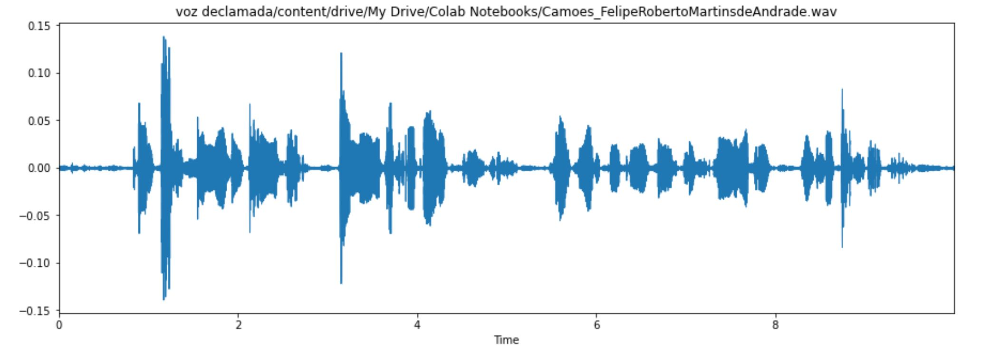 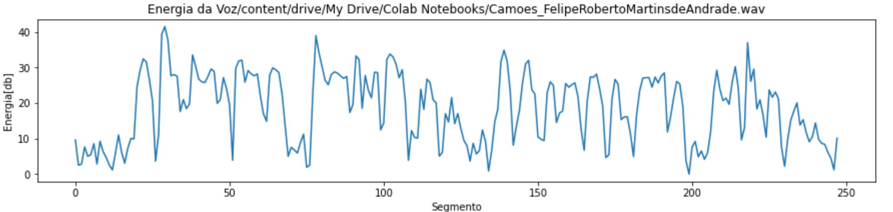 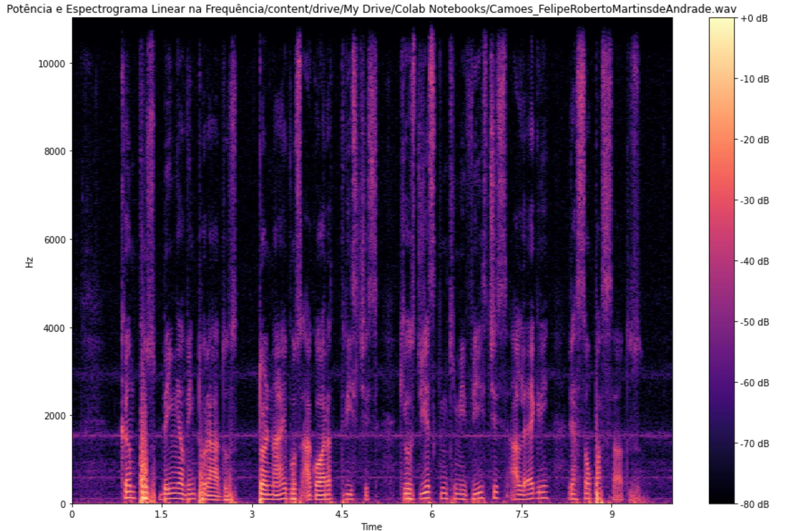 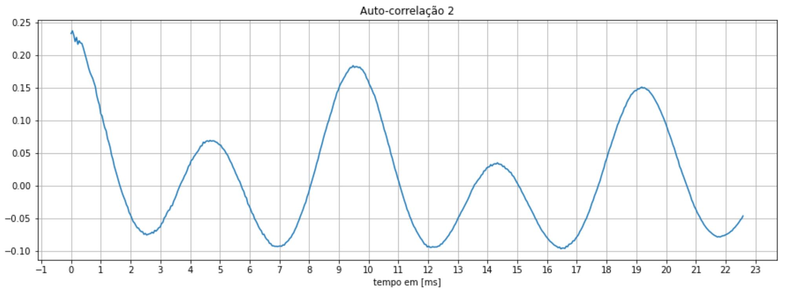 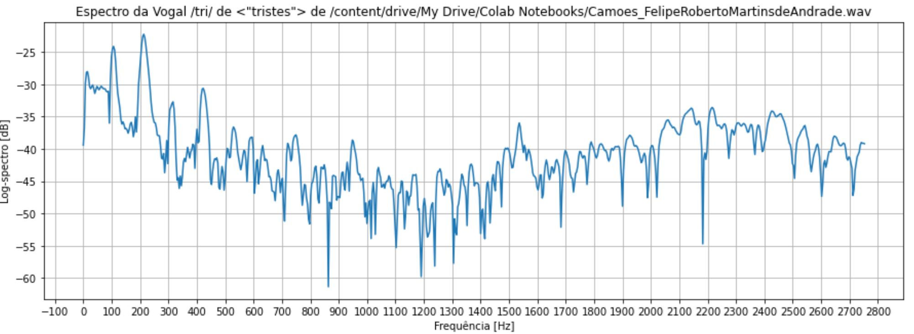
Consoantes Plosivas
Trecho do espectrograma que contém a consoante /p/ da palavra 'Campos', retirada da poesia de Camoes.
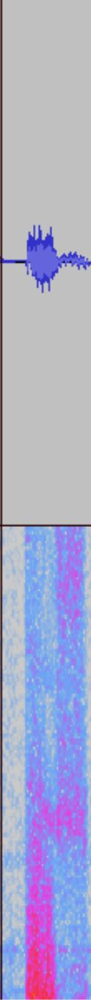
Trecho do espectrograma que contém a consoante /t/ da palavra 'Tornais-vos', retirada da poesia de Camoes.

Trecho do espectrograma que contém a consoante /p/ da palavra 'Passados', retirada da poesia de Camoes.